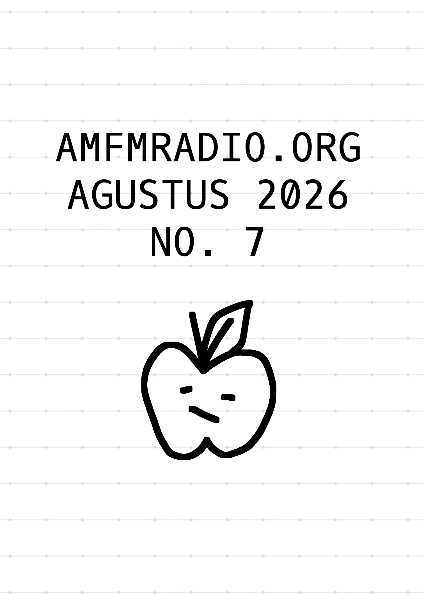

[2026/09/10]
Agustus 2026

This month hasn't been the best for me, so there's not much that I wish to write about.
There's one thing that I can write about; Dolly Parton passed away this month. I cried a lot over her. It's the first time I cried a lot over a famous person/celebrity's death. Eighty years old... she was too fucking young..... Haha.
I have a friend from East Tennessee. They tell me all about Dolly and how she's an amazing person and how her generosity has contributed to their state... It astonishes me greatly how she really could have been a billionaire, but instead, she was always donating her money to people and programs in need. I think about the Imagination Library and how she made it in honor of her illiterate father, who paid their doctor with a sack of cornmeal to deliver Dolly because their family was so poor, and I cry. I wouldn't be as good in English as I am right now if it weren't for books that I was fortunate enough to get my hands on as a kid. I think about Dolly Parton's Children Hospital and cry, on how the hospital manages to stay operational due to Dolly's philanthropy, and how they named it in honor of her in her final moments (my friend says that this kind of thing only happens when a person is near the end of their life, but it was still shocking to me when she passed anyway). My friend had several surgeries in that very hospital when they were younger, and they tell me that regardless of age, every patient gets a plush at the end of their visit. I listened to some of her greatest hits, and I bawled like a toddler. I thought that I have never heard her music before, but it turns out that many famous song covers are just covers of music she wrote. She was so talented and amazing, and I think to myself... I should do my best to help others as best I can, because that's what Dolly would have wanted.
I donated some money to Dolly Parton's Children Hospital. Lots of people donated money to the Imagination Library - so much so that the site crashed and couldn't accept donations. That would've made Dolly really happy to know. Anyway, if you have the financial means to do it, I encourage you to donate to her
Imagination Library or
Children's Hospital - better yet perhaps, to donate what you can to your local library and community.
est. 2024 © amfmradio.org